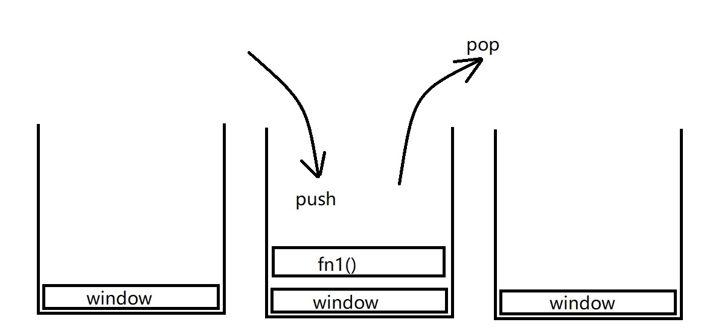
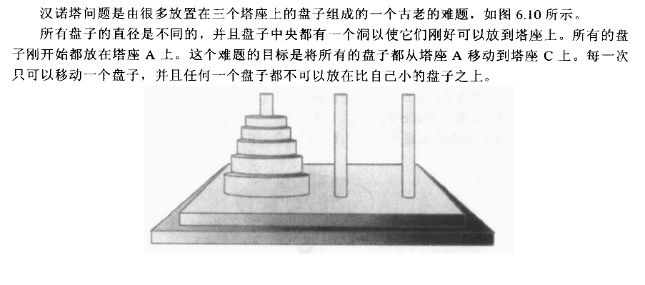

奥特曼打小怪兽
大招是怎么发出来的？我们只知道奥特曼在被打的快趴下的时候一般就可以发大招制服小怪兽了
那么，发大招这个技能是被奥特曼自己封装起来的，在某一特定条件下就会触发这个行为，而且这个行为能够反复发生，需要的时候执行一下就可以达到相同的发大招效果
其实，这很类似于js，对一些功能进行封装包裹，在需要的时候只需要再将封装好的行为拿出来再执行一遍就好了。
函数：一个工具，被封装好可重复执行的一段代码块
把某一段代码放在函数里面进行封装，可以避免在非必要情况下调用该代码，也就是说我们可以让一段代码在特定情况下再去执行，而且每次需要执行这一段代码的时候只需调用一下这个函数即可（函数名）
我们在需要的时候可以调用一个封装好的函数，函数内的一些代码就会被执行，功能就会被实现
系统函数： parseInt() alert() prompt() eval()
自定义函数
函数的声明和使用
//通过function关键字声明一个函数，跟上函数名，一堆小括号，一堆花括号，花括号里面放代码块
//提升到顶部
function test(){
//可重复执行的代码块
}
test();
test();
test();
//表达式定义法
//不会提升
var test1 = function(){
//可重复执行的代码块
for (var i = 0; i < 10; i++) {
test1();
}
案例：打印三行四列的表格
函数参数
形参：形式参数，声明函数的时候写在小括号里面的参数，无需var
实参：实际参数，在函数调用的时候需要传递实际有值得参数
实参个数大于形参，多余实参自动舍弃
形参个数大于形参，多余形参默认为undefined
实参副本arguments：可以在函数内部使用arguments接收所传递过来的参数，是一个集合
function test(){
console.log(arguments);
console.log(arguments.length);
}
test(1,2,3,5,6) // 打印 1,2,3,5,6 长度为5
练习
1、编写一个函数，计算n ~ m之间的闰年（传参实现）
2、函数实现1-100中7的倍数或者带7的数（逢任何数字（通过传参）过）
3、编写函数判断任意一个数是否是素数
作用域
function fun(){
var a =0;
alert(a);
}
fun();
alert(a);
作用域：变量的作用范围
全局变量
作用范围为整个程序的执行范围
在函数体外部定义的变量就是全局变量
在函数体内部不使用var定义的也是全局变量
局部变量
作用范围是某个函数体内部
在函数体内部通过var关键字定义的变量或者形参，都是局部变量
当局部变量与全局变量重名时，在函数体内部局部变量优先于全局变量
变量提升
变量的声明会提升至当前作用域的最顶端，但不会提升赋值
return关键字
1.结束函数的执行
2.交回函数执行权
3.返回一个结果函数调用位置
堆栈
是一种数据结构，指的是数据存取的方式，当定义一个变量时，内存会开辟一段空间
栈（ Stack）：先进后出（FILO），在栈顶做插入（压栈）和删除操作（出栈）。
队列：先进先出（FIFO），在队头做删除操作,在队尾做插入操作。
堆和它们不同，代码执行时系统动态分配，不存在是先进后出还是先进先出。
执行环境执行栈（也称执行上下文–execution context）
当JavaScript解释器初始化执行代码时，它首先默认进入全局执行环境，从此刻开始，函数的每次调用都会创建一个新的执行环境，每一个执行环境都会创建一个新的环境对象压入栈中。
当执行流进入一个函数时，函数的环境对象就会被压入一个环境栈中（execution stack）。在函数执行完后，栈将其环境弹出，把控制权返回给之前的执行环境。

作用域链
内层环境可以访问外层中的变量和函数，而外层环境不能访问内层的变量和函数
汉诺塔问题

递归
程序调用自身的编程技巧称为递归（ recursion）。
递归，就是在运行的过程中调用自己，本质就是循环。
构成递归需具备的条件
1. 子问题须与原始问题为同样的事，且更为简单；
2. 不能无限制地调用本身，须有个出口，化简为非递归状况处理。
由于递归是函数本身一层一层压栈，导致先入栈的不能出栈，空间占满以后就会造成堆栈溢出
斐波那契数列指的是这样一个数列 1, 1, 2, 3, 5, 8, 13, 21, 34, 55, 89........
这个数列从第3项开始，每一项都等于前两项之和。
在数学上，斐波纳契数列以如下被以递归的方法定义：F(0)=1，F(1)=1, F(n)=F(n-1)+F(n-2)（n>2，n∈N*）
练习
1、利用递归求100的阶乘
2、编写函数计算任意数字的阶乘（两种方法）
3、函数和循环结合打印任意乘法表
4、编写函数实现：两个数平方的阶乘相加的和
要求：三个函数实现，一个求阶乘，一个求平方，第三个函数利用这两个函数求出最终结果
5、如果一个数恰好等于它的因数（除自身以外）之和，则称该数为“完全数” perfect number。
请列出m~n（m<n）的所有完全数（要求用两个函数实现）